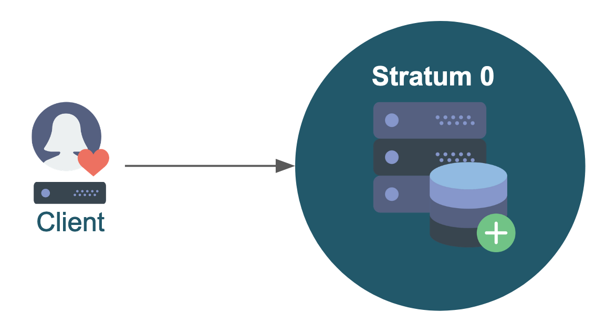

2. Stratum 0 and client¶
In order to get started with CernVM-FS, the first thing you need is a Stratum 0 server.
The Stratum 0 is the central server that hosts your repositories and makes it available to other systems. There can be only one Stratum 0 server for each CernVM-FS repository, and from a security perspective it is recommended to restrict the access to this system. We will look more into that later.
For now, we are going to set up a Stratum 0, create a repository, and access it by connecting from a client machine directly to the Stratum 0 server.

Warning
Directly connecting to the Stratum 0 is not recommended, but it is a good way to get started.
In the next hands-on part of this tutorial we will remedy this by setting up a Stratum 1 replica server and squid proxy, and accessing the repository that way instead.
2.1 Setting up the Stratum 0¶
2.1.1 Requirements¶
Resources¶
Due to the scalable design of CernVM-FS, the Stratum 0 server does not need a lot of resources in terms of CPU cores and memory; just a few cores and a couple gigabytes of memory is sufficient.
Besides this, you do need sufficient storage space to store the contents of your repository.
CernVM-FS uses /var/spool/cvmfs as scratch space while adding new files to the repository, and /srv/cvmfs as central repository storage location.
To change these locations, you can create either of the paths as a symbolic link to a different directory.
Operating system¶
Several (popular) Linux distributions are supported by CernVM-FS, see the Getting Started page of the CernVM-FS documentation for a full list.
In this tutorial we will use CentOS 8 on x86_64, but it should be relatively straightforward to use another OS or CPU architecture instead.
CernVM-FS supports for hosting the repository contents in S3 compatible storage, but for this tutorial we will focus on storing the files locally on the Stratum 0 server.
For this we need an Apache (web)server on the host, and port 80 must be open.
2.1.2 Installing CernVM-FS¶
Installing CernVM-FS is simple and only requires some packages to be installed.
You can easily do this by adding the CernVM-FS repository and install the packages through your package manager:
# sudo yum install -y epel-release # only needed on CentOS 7
sudo yum install -y https://ecsft.cern.ch/dist/cvmfs/cvmfs-release/cvmfs-release-latest.noarch.rpm
sudo yum install -y cvmfs cvmfs-server
Alternatively, you can download the packages from the CernVM-FS downloads page and install them package manually.
Note that you need both the client and server package installed on the Stratum 0 server.
2.1.3 Starting Apache webserver¶
Since the Stratum 0 is serving contents via HTTP, the Apache service needs to be running before we can make a repository.
The Apache (httpd) package should have been installed already, as it is a dependency of the cvmfs-server package,
so the service can now be enabled (so that it always starts after a reboot) and started using:
sudo systemctl enable httpd
sudo systemctl start httpd
2.1.4 Creating the repository¶
Now that all required packages have been installed, we can create a CernVM-FS repository.
In the simplest way, this can be done by running the following command, which will make the current user the owner of the repository:
sudo cvmfs_server mkfs -o $USER repo.organization.tld
The full repository name (here repo.organization.tld) resembles a DNS name, but the organization.tld domain does not actually need to exist.
It is recommended to give all the repositories belonging to the same project or organization the same .organization.tld domain.
This makes the client configuration much easier, also in case new repositories will be added later on.
Warning
Please come up with a proper name for your repository, including a domain you will remember throughout this tutorial.
Do not use repo.organization.tld.
For example, use repo.<your_first_name>.org, where you replace <your_first_name> with (you guessed it) your
first name. Feel free to use something else than your first name, of course.
2.1.5 Repository keys¶
For each repository that you create, a set of keys will be generated in /etc/cvmfs/keys:
*.crt: the repository’s public key (encoded as an X509 certificate);*.key: the repository's private key;*.masterkey: the repository's private master key;*.pub: repository’s public master key (RSA).
The public master key (repo.organization.tld.pub) is the one that is needed by clients in order to access the repository, so we will need this later on.
The private master key (repo.organization.tld.masterkey) is used to sign a whitelist of known publisher certificates,
and should not be shared with others.
This whitelist is (by default) valid for 30 days, so the signing has to be done regularly (for example via a cron job).
Although you can use a different master key per repository, it is recommended to use the same master key for all repositories under a single domain, so that clients only need a single public master key to access all repositories under this domain. For more information, see the CernVM-FS documentation: https://cvmfs.readthedocs.io/en/stable/cpt-repo.html#master-keys.
2.1.6 Adding files to the repository¶
A new repository automatically gets a file named new_repository in its root (/cvmfs/repo.organization.tld). You can add more files by starting and publishing a transaction, which will be explained in more detail in the 3rd hands-on part of this tutorial.
For now it is enough to just run the following commands to add a simple hello.sh script to your repository.
First, start the transaction via cvmfs_server transaction <name_of_repo>:
# Change this to your repository/domain name!
MY_REPO_NAME=repo.organization.tld
cvmfs_server transaction ${MY_REPO_NAME}
Next, add the file to the repository (in /cvmfs/${MY_REPO_NAME}).
If you made the current user the owner of the repository, you can do this without sudo since you have write
permissions to your repository:
echo '#!/bin/bash' > /cvmfs/${MY_REPO_NAME}/hello.sh
echo 'echo hello' >> /cvmfs/${MY_REPO_NAME}/hello.sh
chmod a+x /cvmfs/${MY_REPO_NAME}/hello.sh
Complete the transaction by publishing the changes using:
cvmfs_server publish ${MY_REPO_NAME}
2.1.7 Cron job for resigning the whitelist¶
Each CernVM-FS repository has a whitelist containing fingerprints of certificates that are allowed to sign the repository. This whitelist has an expiration time of (by default) 30 days, so you regularly have to resign the whitelist.
There are several ways to do this, see for instance the page about master keys in the CernVM-FS documentation.
If you keep the master key on our Stratum 0 sever, you can set up a simple cronjob for resigning the whitelist. For instance, make a file /etc/cron.d/cvmfs_resign with the following content to do this every Monday at 11:00:
0 11 * * 1 root /usr/bin/cvmfs_server resign repo.organization.tld
For the sake of this tutorial this is not really necessary of course, but it's an important aspect to be aware of.
2.1.8 Removing a repository¶
An existing repository can be removed easily by running:
sudo cvmfs_server rmfs repo.organization.tld
Obviously you should only do this when you actually want to get rid of the repository...
2.2 Setting up a client¶
Accessing a CernVM-FS repository on a client system involves three steps:
- installing the CernVM-FS client package;
- adding some configuration files for the repository you want to connect to;
- running the CernVM-FS setup procedure that will mount the repository.
The client is going to pull in files from the repository over an HTTP connection. CernVM-FS maintains a local cache on the client, so you need sufficient space for storing it.
You can define the maximum size of your cache in the client configuration. The larger your cache is, the less often you have to pull in files again, and the faster your applications will start. Typical client cache sizes range from 4GB to 50GB.
Note that you can add more cache layers by adding a proxy nearby your client, which will be covered in the 2nd hands-on part of this tutorial.
Note
Make sure you use a different system (or virtual machine) for the client!
It doesn't make much sense to install both the Stratum 0 server and the CernVM-FS client configuration on the same system...
2.2.1 Installing the client package¶
The installation is the same as for the Stratum 0, except that you only need the cvmfs package
(we don't need to CernVM-FS server component on the client):
# sudo yum install -y epel-release # only needed on CentOS 7
sudo yum install -y https://ecsft.cern.ch/dist/cvmfs/cvmfs-release/cvmfs-release-latest.noarch.rpm
sudo yum install -y cvmfs
2.2.2 Configuring the client¶
Most organizations hosting CernVM-FS repositories offer a client package that you can install to do most of the configuration. For the sake of this tutorial, we are going to do this manually for our repository.
All required configuration files will have to be stored under /etc/cvmfs.
We will discuss them one by one, where we use repo.organization.tld as repository name, and hence organization.tld as domain.
Don't forget to rename or change these files according to the repository name and domain you are using!
Public key of repository¶
/etc/cvmfs/keys/organization.tld/repo.organization.tld.pub
This file contains the public key of the repository you want to access.
You can copy this file from your Stratum 0 server, where it is stored under /etc/cvmfs/keys/.
Main repository configuration¶
/etc/cvmfs/config.d/repo.organization.tld.conf
This file contains the main configuration for the repository you want to access, which should minimally contain the URL(s) of the Stratum 1 servers and the location of the keys.
We do not have a Stratum 1 server yet (we will set that up in the next hands-on part of this tutorial), so we are going to connect directly to our Stratum 0 server instead. You should not do this in production!
A typical, minimal configuration should look as follows:
CVMFS_SERVER_URL="http://<STRATUM0_IP>/cvmfs/@fqrn@"
CVMFS_KEYS_DIR="/etc/cvmfs/keys/organization.tld"
Replace the <STRATUM0_IP> part with the IP address of your Stratum 0 server!
Note that the CVMFS_SERVER_URL should include the part /cvmfs/@fqrn@ exactly like that;
the last part (@fqrn@) will be replaced automatically by the full name of your repository.
Local client configuration¶
/etc/cvmfs/default.local
This file can be used for setting or overriding client configuration settings that are specific to your system.
The CVMFS_HTTP_PROXY parameter is required: it should point to your local proxy that serves as a cache
between your client(s) and the Stratum 1 server(s).
Since we do not have a proxy yet, we are setting this to DIRECT, meaning that we connect directly to the Stratum 1
server (actually, Stratum 0 at this point):
CVMFS_HTTP_PROXY=DIRECT
You can also use this file to specify a maximum size (in megabytes) for the cache. For example, to use a local cache of maximum 5GB:
CVMFS_QUOTA_LIMIT=5000
2.2.3 Mounting the repositories¶
When your client configuration is complete, you can run the following command as root to mount the repository:
sudo cvmfs_config setup
This should not return any output or error messages. after).
If you do run into a problem, check out the debugging section on the Advanced topics page.
2.2.4 Inspecting the repository¶
Finally, we can try to access our repository on the client system.
Note that CernVM-FS uses autofs, which means that you may not see the repository when you just run "ls /cvmfs".
Your repository will only be actually mounted when you access it, and may be unmounted after not using it for a while.
So, the following should work and show the contents of your repository:
ls /cvmfs/repo.organization.tld
Exercise¶
Time to get your hands dirty! Try this yourself:
- Set up your own CernVM-FS repository on Stratum 0 server in a virtual machine.
- Create a repository with a suitable name (for example,
exercise.<your_first_name>.org). - Add a simple bash script to the repository, which, for instance, prints
Hello world!. - Install and configure the CernVM-FS client on another virtual machine. Access your repository directly via Stratum 0 for now.
- Try to access your repository, and run your bash script on the client.